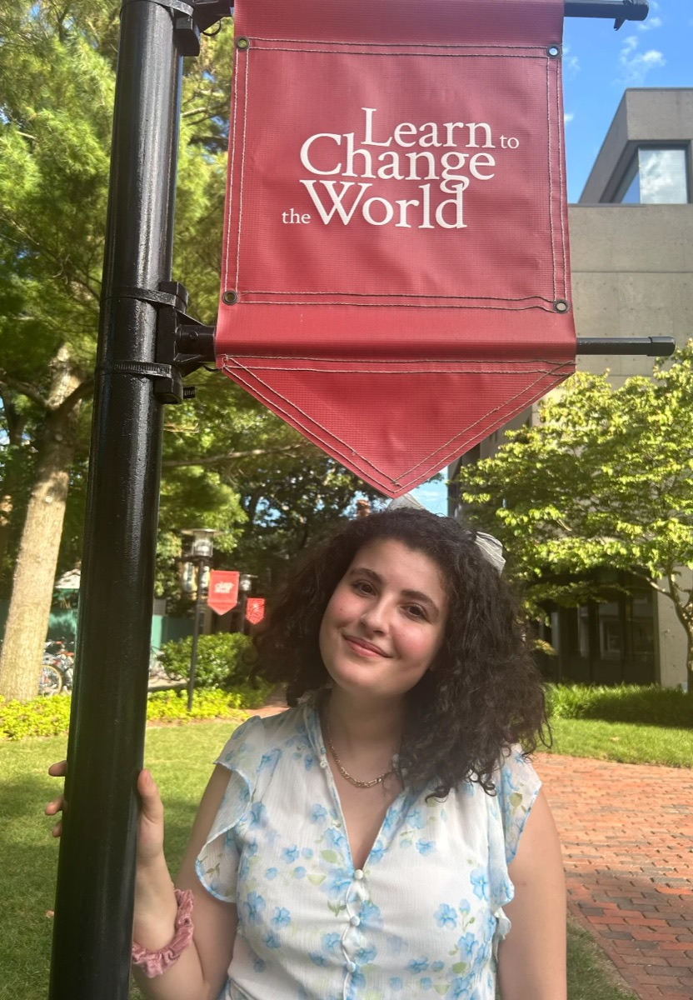
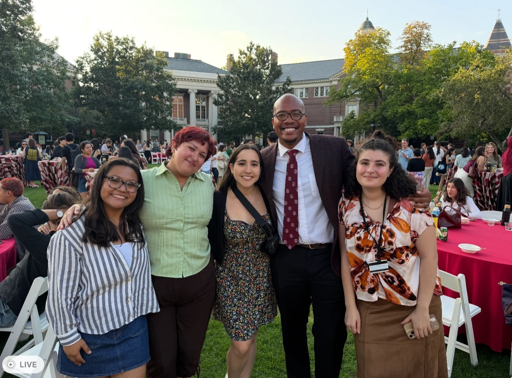
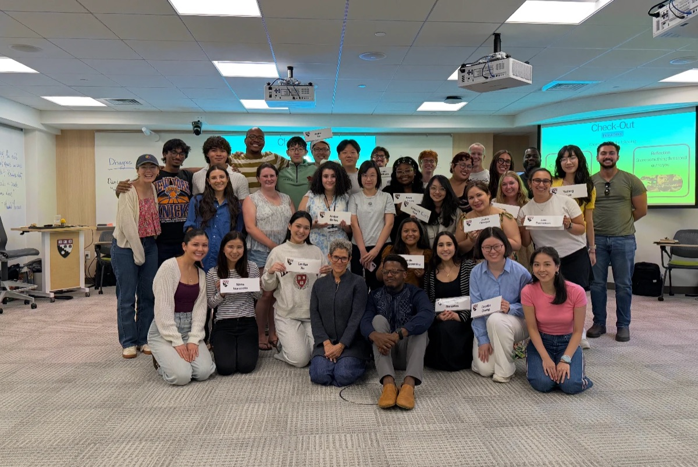
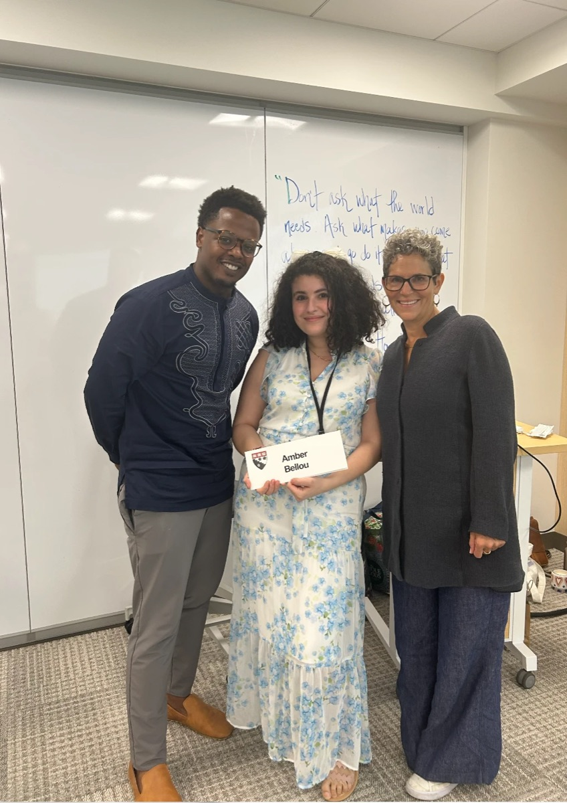
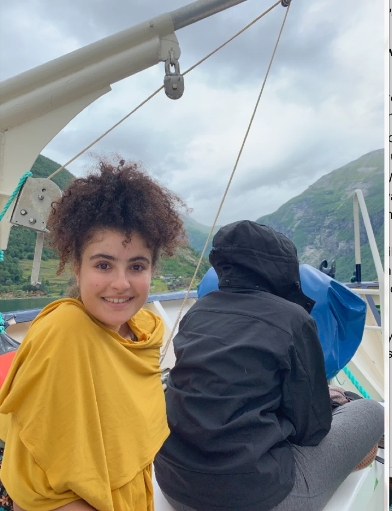

🚪
Open doors to opportunity
Internships, research, labs, jobs, and student orgs: fair and early access to all of it for all HGSE students, with clear timelines and one shared place to find openings.
HGSE Student Council
Hi, I'm Amber. I'm running for Student Council because I want to listen first, gather what we actually need, and turn it into real improvements for all of us.
Anonymous by default. Takes one minute.
Hi, it's me





About me
My family is Algerian. I grew up in France and spent parts of my childhood in other countries, which is how I picked up English. I came to the United States as an international student in high school and I stayed.
I studied anthropology because I love people, and political science because I believe policy is how positive change lasts. I minored in environmental science out of care for the planet and the generations who inherit it, and I followed the pre-med track because health and wellbeing matter deeply to me.
I then earned a master's in data and computational social science. That training taught me how to listen to a community at scale and turn what I hear into decisions. That is exactly what I hope to do for you.
Today I work in educational nonprofits, and my research is on AI and cognition. I worry about the future of education, for children and adults alike, and about the threats AI can pose to how we think. I want to understand those risks and build real safety protocols: technical guardrails on one side, and behavioral ones on the other, by teaching cognitive governance, the practice of staying in charge of your own thinking.
Most of us have only one year here. I want every HGSE student to be in control of their decisions and their outcomes during it, and to leave with the best opportunities this place can offer.
I want to be the voice of all HGSE students
Whoever you are and wherever you come from, your experience here matters. If you have ever felt far from home, new to a system, or unsure who to ask, I have been there. I will make sure you are never navigating alone.
What I will work on
One year goes fast. I want all of us to stay in control of our decisions and outcomes, and to get the most out of every part of Harvard.
Internships, research, labs, jobs, and student orgs: fair and early access to all of it for all HGSE students, with clear timelines and one shared place to find openings.
Events, programs, initiatives, cross-registration, and collaborations with the other Harvard graduate schools, so your year is a Harvard year, not only an HGSE year.
I will collect what students need, share what I learn with the community, and report back on what changed. No guessing on your behalf.
A community where international, first-generation, and underrepresented students feel seen, supported, and connected from week one. And more events that bring all of HGSE together, across programs, cohorts, online and in person, so we feel like one community and not a set of separate tracks.
I moved to the US as an international student in high school. I know the visa questions, the paperwork, the distance from home, and the feeling of not knowing who to ask. I will fight for more support: clearer guidance, real answers, and a community that catches you.
Students have already told me this one: they want to know faculty beyond office hours and a syllabus. I will push for more chances to actually talk with faculty, like regular meet-ups, small-group lunches and coffees, mentoring circles, and informal evenings where we get to know each other as people, for in-person and online students who want to connect deeper.
Our online Ed.M. students are HGSE students, full stop. I will be vocal about your issues and represent you so you get equal access: more internships, more online research opportunities, real relationships with faculty, and more ways to learn from and get involved with the other Harvard graduate schools, not just HGSE.
I studied anthropology, political science, environmental science, and data science, and I know many of us at HGSE don't fit in one box. I want more internships and research that reach beyond HGSE, into the other Harvard schools and beyond, so your mix of interests is an asset, not a puzzle.
I'm a former preschool teacher, and I've already been lending a hand to classmates with kids this semester. As the year gets busier we need something more organized than one person's goodwill: a parent network so families can find and support each other, family-friendly events where kids are welcome, one clear guide to Harvard's childcare and family resources, and accommodations like family-aware scheduling and flexibility when home needs you first.
HGSE has no dining hall, most of us have no meal plan, and Cambridge is expensive. I will push for more community meals and events with food at Gutman, one shared calendar of where food is on campus, better deals for HGSE students at Harvard cafes, and clear access to food resources for anyone who needs them. Nobody should be learning hungry.
Access to software like Adobe, NVivo, SPSS, and Stata varies wildly from one Harvard school to the next. I will ask HGSE IT to survey what students actually need and license the top few. And while GSAS students get Harvard Recreation membership for free, HGSE students pay a yearly fee for the same gyms. I will push to close that gap.